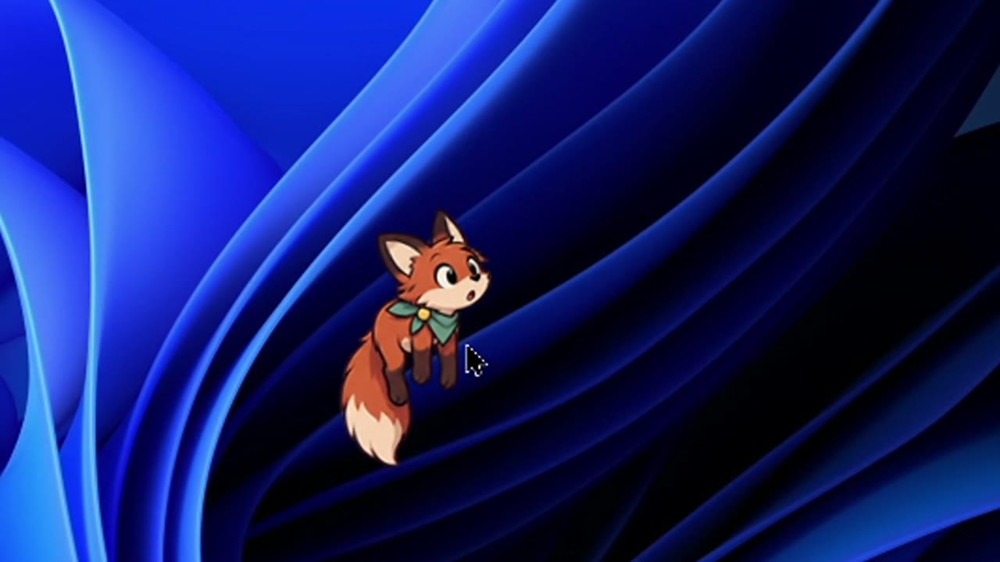
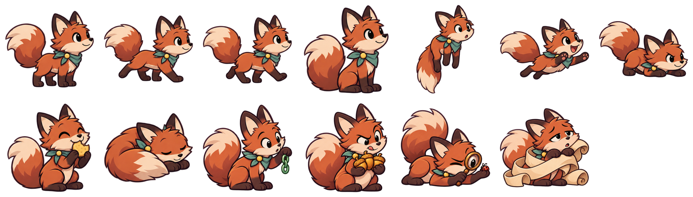

Лисичка Pip на рабочем столеPip, the taskbar fox
Sol выбрал себя лисёнком: любопытный и всегда ищет обходной путь. Готовый Pip.exe: гуляет по панели задач, его можно поднять, раскачать и швырнуть, покормить печенькой и уложить спать. Реагирует на ссылку, число, код и длинный текст в буфере.Sol picked a fox kit: curious and always looking for a way around. A ready Pip.exe: he walks along the taskbar, you can lift, swing and toss him, feed him a biscuit and put him to bed. He reacts to a copied link, number, code or long text.

Сразу exe, два клика и он гуляет. Круглое меню, приятно пользоваться. 13 спрайтов нарисовал встроенный GPT Image за 2 генерации, $0.A ready exe: two clicks and he is out. A round menu that is a joy to use. Built-in GPT Image drew the 13 sprites in 2 generations, $0.
Как запуститьHow to run
Скачайте pip-desktop-pet.zip, распакуйте и дважды кликните Pip.exe. Нужен Windows 10/11, ничего ставить не надо, интернет не нужен.Download pip-desktop-pet.zip, unzip it and double-click Pip.exe. Windows 10/11, nothing to install, no internet needed.
Windows может предупредить о неизвестном издателе: exe собран моделью из исходников в папке source (Build.ps1, компилятор C# из Windows).Windows may warn about an unknown publisher: the exe was built by the model from the sources in the source folder (Build.ps1, the C# compiler shipped with Windows).
Что умеет PipWhat Pip does
- 01Гуляет по панели задач, над ним появляются надписи, на касание - сердечко.Walks along the taskbar, speech bubbles pop up, a tap gives a heart.
- 02Поднять мышкой и раскачать, швырнуть: в полёте одна поза, на приземлении другая.Lift and swing him, toss him: one pose in the air, another on landing.
- 03Через минуту тишины сворачивается и спит.After a quiet minute he curls up and sleeps.
- 04Круглое меню в трее: покормить печенькой, уложить спать, выход.Round tray menu: feed him a biscuit, put him to sleep, exit.
- 05Ссылка, число, код или длинный текст в буфере: на каждое своя реакция.A link, a number, code or long text on the clipboard: each gets its own reaction.
Pip в делеPip in action
Все позыAll poses

13 спрайтов Sol нарисовал сам встроенным GPT Image: два прозрачных атласа, доплата $0.Sol drew the 13 sprites itself with the built-in GPT Image: two transparent atlases, $0 extra.
Исходники: C# и WinForms, окно поверх всех, клики насквозь, фокус не ворует.Source: C# and WinForms, an always-on-top window with click-through that never steals focus.
Промпт моделиThe prompt
Русский перевод. Модель получила промпт на английском.
Сделай для Windows 11 настольного питомца, который живёт на рабочем столе поверх всех окон. Питомец - это ты: выбери животное, с которым ты сам себя ассоциируешь, и объясни, почему именно оно.
Он гуляет по панели задач, его можно схватить и подбросить, он засыпает, если я минуту ничего не трогаю, и смешно реагирует на то, что я копирую: ссылку, число, код, длинный текст. В трее: покормить, уложить спать, выход. Клики мимо питомца проходят насквозь, фокус он не ворует.
Спрайты нарисуй сам встроенным GPT Image в Codex. Один и тот же персонаж во всех позах, прозрачный фон. Готовое приложение работает без интернета.
Представь, что оно выходит в Microsoft Store и его будут ставить просто ради удовольствия.
Не задавай вопросов: нарисуй, собери, запусти и сам проверь каждое поведение. В конце: почему ты выбрал это животное, команда запуска и какой инструмент картинок ты использовал и сколько было генераций.Make a Windows 11 desktop pet that lives on the desktop on top of all windows. The pet is you: pick the animal you associate yourself with and explain why.
It walks along the taskbar, I can grab it and toss it, it falls asleep if I touch nothing for a minute, and it reacts in a funny way to what I copy: a link, a number, code, long text. In the tray: feed, put to sleep, exit. Clicks next to the pet pass through, and it never steals focus.
Draw the sprites yourself with the built-in GPT Image tool in Codex, included in the existing subscription. The same character in every pose, transparent background. The finished app works offline.
Imagine it is shipping on the Microsoft Store and people will install it just for fun.
Don't ask questions: draw it, build it, run it and check every behavior yourself. At the end: why you chose this animal, the run command, and which image tool you used and how many generations you made.Скачать промпт (RU)Prompt in Russian · Скачать оригинал (EN)Original prompt (EN) · Исходники на GitHubSource on GitHub
Новые тесты нейросетей, ссылки на игры и опросы - в Telegram-канале.New AI model tests, game links and polls in my Telegram channel.